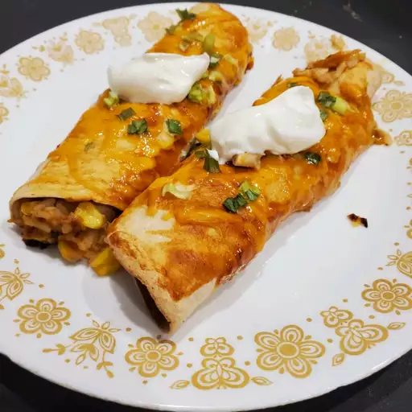

Angela's Awesome Enchiladas

Description
These chicken enchiladas are best if it is served
with sour cream and a side spanish rice.
These enchiladas are flavorful with the mix of
seasonings that are used to flavor them.
Ingredients
- 2 pounds of chicken breast meat - cut into chuncks
- 1 and 1/4 cups sour cream
- 10.5 ounce can condensed cream of chicken soup
- 1/4 teaspoon chili powder
- 1 tablespoon butter
- 1 small onion, chopped
- 1 cup water
- 1 bunch green onions, chopped
- 4 ounce can chopped green chiles, drained
- 1.25 ounce package mild taco seasoning mix
- 1 teaspooon lime juice
- 1/2 teaspoon onion powder
- 1/2 teaspoon garlic powder
- 12 inch flour tortillas 5x
- 3 cups shredded cheddar cheese
- 10 ounce can enchilada sauce
- 6 ounce can sliced black olives, drained
Steps
-
Place chicken into large pot then add water to cover.
Bring to boil over high heat, then reduce heat to a medium-low,
cover and simmer until chicken is no longer pink and juice runs clear.
-
Remove chicken from pot and let sit until cool enough to handle.
Shred the chicken with two forks.
-
Combine Sour Cream, condensed soup, and chili powder
in a saucepan. Bring to a simmer, stirring occasionally,
then remove heat and cover to keep warm.
-
At the same time melt butter in a skillet over medium heat.
Add onion; cook and stir until translucent. Add shredded chicken,
water, 1/2 of the green onions, green chiles, and taco seasoning;
simmer for 10 minutes. Stir in lime juice onion powder, and garlic
powder; simmer 10 more minutes.
-
Preheat oven to 350 degrees farenheit
-
Stir 1 cup soup mixture into the skillet with chicken.
Spread the remaining mixture over the bottom of a 9x13-inch
baking dish.
-
Fill each tortilla with 1/5 of the chicken mixture and
roughly 5 tablespoons cheddar cheese
-
Roll tortillas around filling and place enchiladas, seam-side
down, into the baking dish. Pour enchilada sauce over the top
and sprinkle with remaining cheddar, green onions, and olives.
-
Bake in the preheated oven until filling is heated through
and cheese is melted and bubbling.